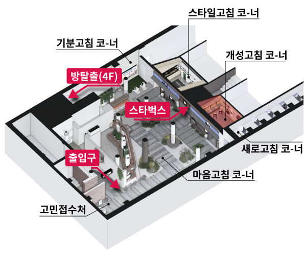

<!-- pop_store3 popup start -->

<section id="pop_store3" class="pop_store modal">
	<div class="popBg">
		<div class="popContent">
			<div class="popTitle_wrap">
				<h2>개성고침 코-너</h2>
				<button onClick="popClose()" class="popup_close"></button>
			</div>
			<div class="con_store">
				<div class="con_store_top">
					
					<h4 class="con_store_title">소개</h4>
					<p>힙한 스티커로 나만의 개성을 뽐내는 공간 <br />
						내 노트북을 멋지게 꾸며도 보고, <br class="mo_br" />
						리사이클링 굿즈도 만날 볼 수 있답니다 
						</p>
				</div>
				<div class="con_store_bottom">
					<h4 class="con_store_title">위치</h4>
					<div class="con_store_imgs">
						<h5 class="store_floor">3F</h5>
						
					</div>
				</div>
			</div>
			<div class="btn_wrap w100per tac">
				<button onclick="popClose()" class="btn_pop_full btn_primary btn mo_view">닫기</button>
			</div>
		</div>
	</div>
	<div class="dim"></div>
</section>
<!-- popup end -->